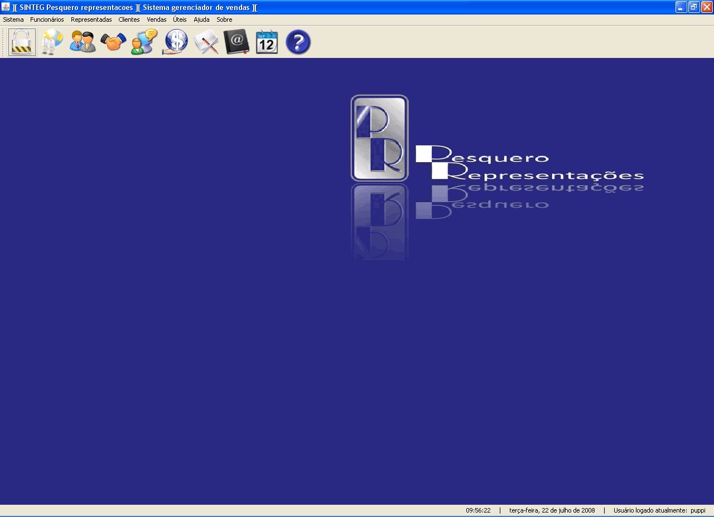

Formulário principal do aplicativo, nesta tela se tem acesso através dos menus suspensos todas as funções do aplicativo e através da barra de ferramentas representadas por ícones as tarefas mais comuns.
Apresentada por ícones representa as tarefas mais comuns do aplicativo representados na sequência:
1 - Logoff (Finalizar seção)
2 - Funcionários
3 - Representadas
4 - Clientes
5 - Visitas realizadas
6 - Vendas
7 - Anotações
8 - Agenda de contatos
9 - Notificações
10 - Ajuda